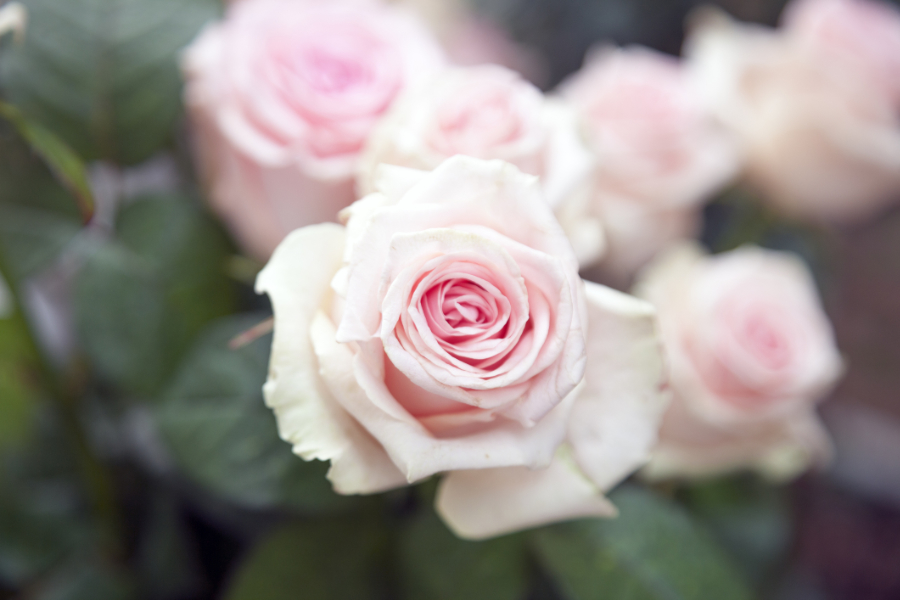
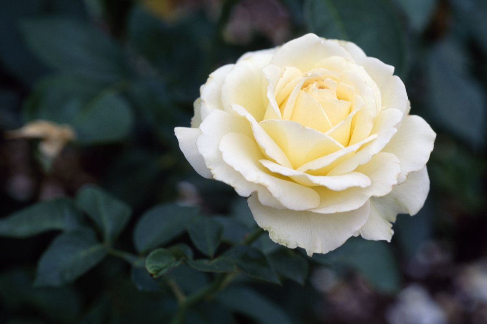
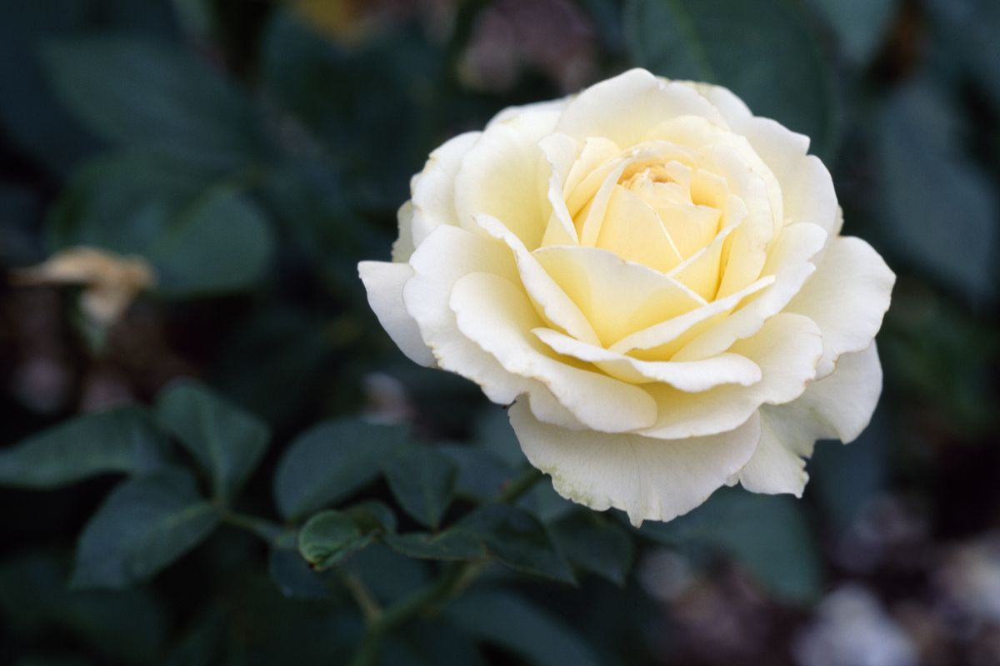

Sunflower
Calla Lily
Sunflower
Calla Lily
Definition: a prickly bush or shrub that typically bears red, pink, yellow, or white fragrant flowers, native to north temperate regions. Numerous hybrids and cultivars have been developed and are widely grown as ornamentals.
Here are example pictures of Roses
 
